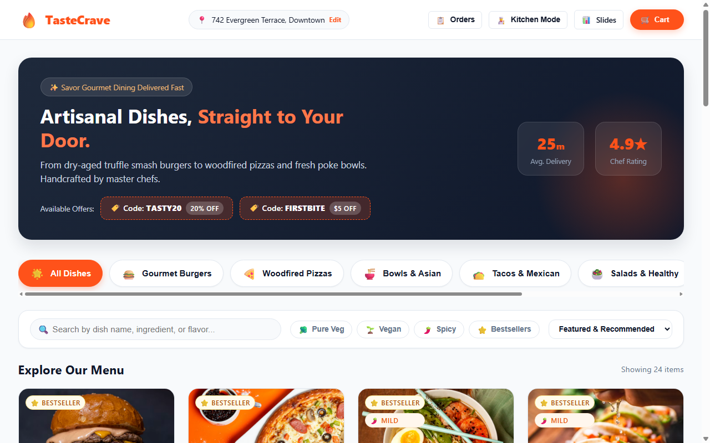
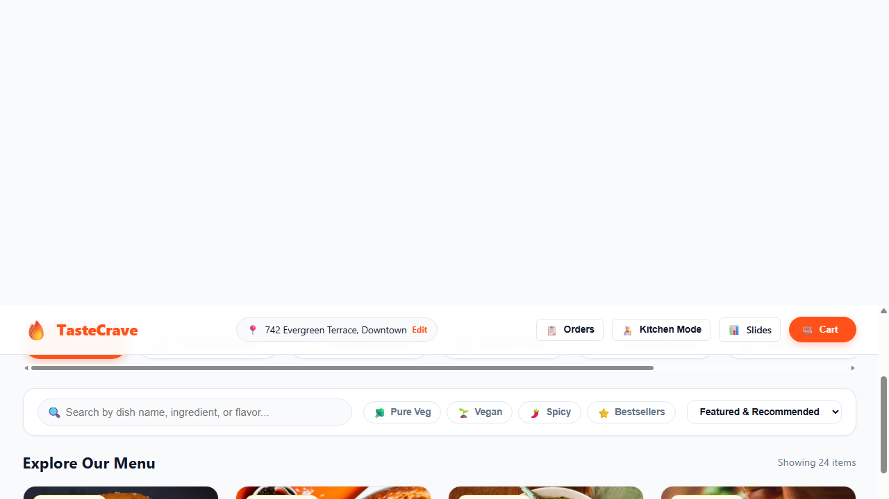
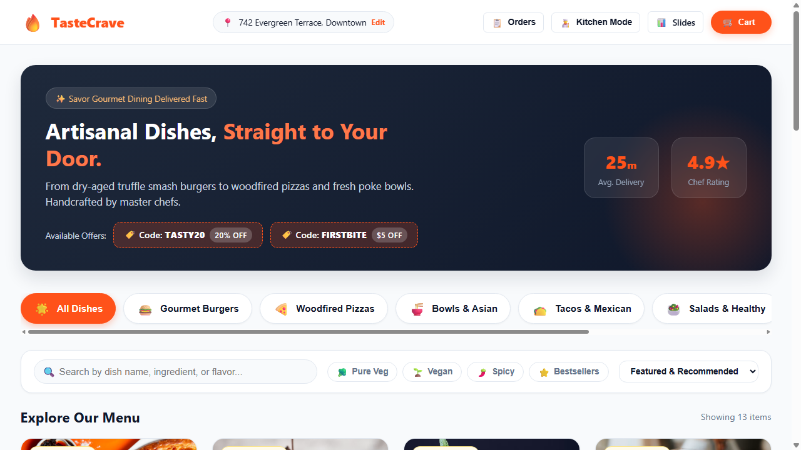
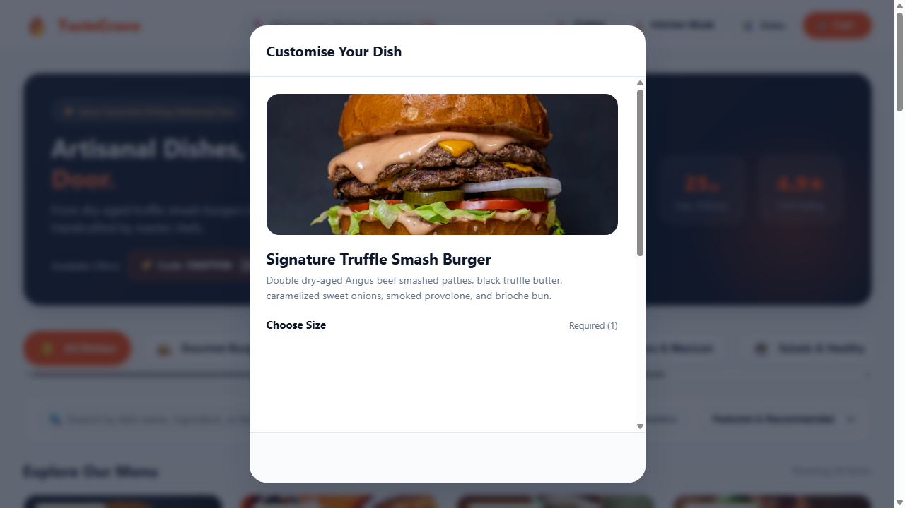
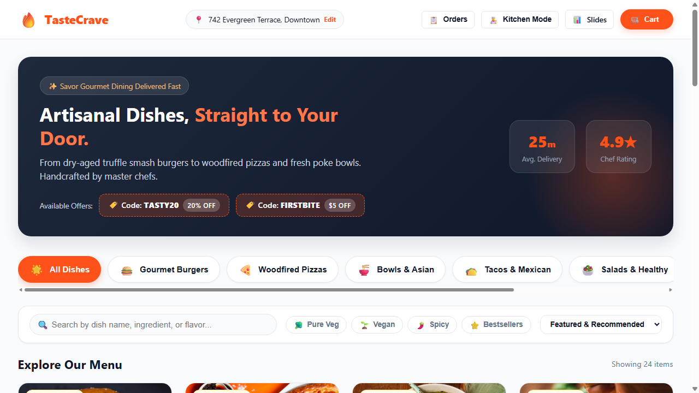
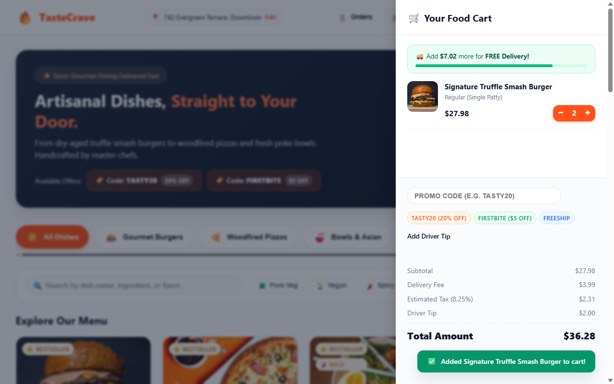
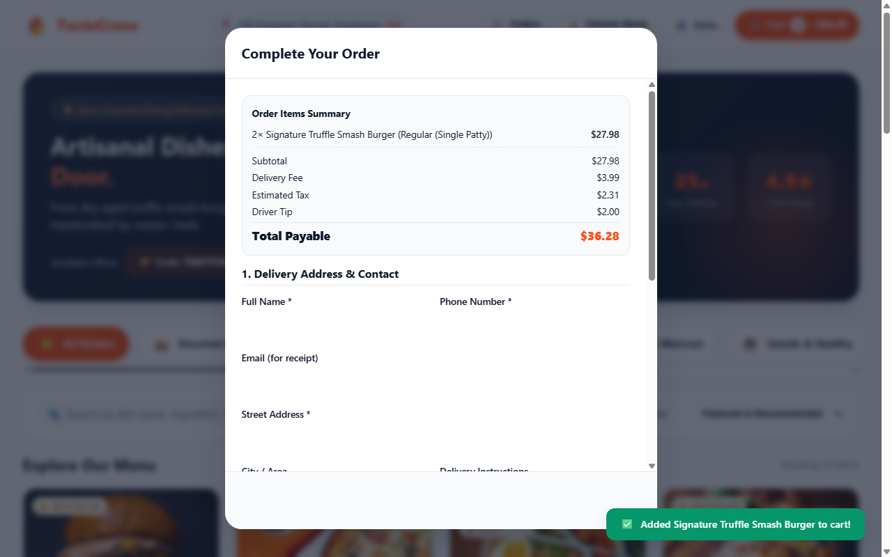
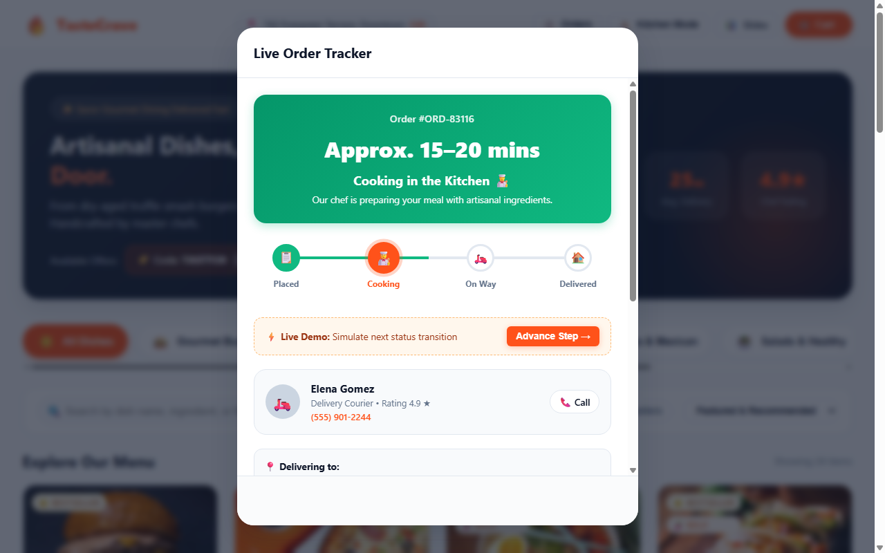
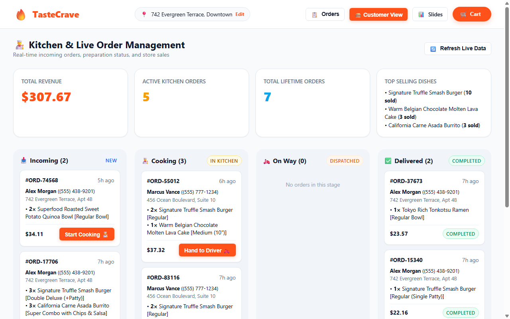

TasteCrave Project - Homepage & Promotional Hero Brand navigation bar, location selector, real-time cart badge, hero promotion & active coupon chips Slide 1 / 10
TasteCrave Project - Gourmet Food Menu & Categories 7 culinary categories, high-resolution food cards, chef ratings, prep times, calories & pricing Slide 2 / 10 
TasteCrave Project - Menu Grid & Dish Details Detailed dish cards with calorie counters, prep duration badges, and quick-add action triggers Slide 3 / 10 
TasteCrave Project - Smart Dietary Filtering Engine Active dietary filter chips: Pure Veg (🥦), Vegan (🌱), Spicy heat meter (🌶️), and Bestseller stars Slide 4 / 10 
TasteCrave Project - Interactive Dish Customizer Modal Size selection options (Regular / Double Deluxe) and artisanal crust types with dynamic price additions Slide 5 / 10 
TasteCrave Project - Customizer Toppings & Special Notes Multi-select toppings (Aged Cheddar, Smoked Bacon, Aioli), special cooking instructions textarea & live total Slide 6 / 10 
TasteCrave Project - Slide-Out Cart & Free Delivery Meter Real-time quantity steppers, unlocked free delivery progress bar ($35 threshold), and line items Slide 7 / 10 
TasteCrave Project - Customer Checkout & Multi-Payment Flow Delivery address capture, Standard vs Priority express speed, Credit Card / UPI QR / Cash on Delivery Slide 8 / 10 
TasteCrave Project - Live Order Tracking & Status Timeline 4-stage visual progress timeline (Placed ➔ Cooking ➔ On Way ➔ Delivered), courier profile card & live demo advance Slide 9 / 10 
TasteCrave Project - Kitchen & Staff Admin Kanban Dashboard Real-time store revenue metrics, active orders counter, and 4-column Kanban board with staff action triggers Slide 10 / 10 